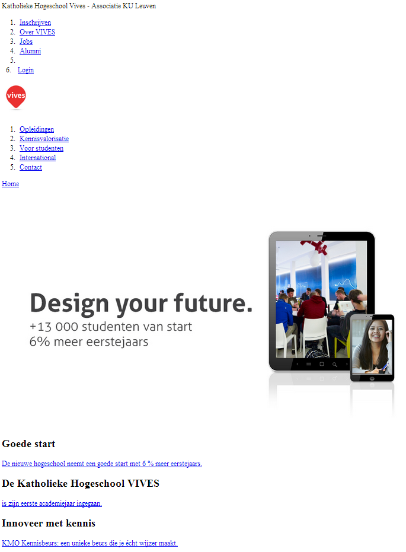

Webtechnology
Chapter 3 - Cascading Style Sheets
Basics of CSS

CSS(3)
CSS allows us to seperate content from presentation.
It allows us to turn this
CSS(3)
Into this
CSS allows you to create rules that specify how the content of an element should appear.
CSS style rules
- CSS works by associating rules with HTML elements. These rules govern how the content of specified elements should be displayed.
-
A CSS rule contains two parts:
- Selectors indicate which element the rule applies to.
- Declarations indicate how the elements referred to in the selector should be styled.
CSS style rules
p
{
color: red;
}
- Declarations are split into two parts (a property and a value), and are separated by a colon.
CSS style rules
- You can specify multiple selectors (seperated by commas)
h1, h2, h3
{
color: red;
font-family: arial;
}
- You can specify multiple declarations (seperated by semicolon)
p
{
color: red;
background-color: #18ff45;
}
Where to place all this CSS ?
There are three options.
Where to place all this CSS ?
-
External CSS file
- Place your CSS code in an external file and give it a .css extension.
- Add a link to the external file in your HTML head section.
<link href="css/styles.css" type="text/css" rel="stylesheet" />
- This is the prefered option since it maximally seperates content from presentation and stylesheets can be easily reused.
- Multiple stylesheets can be used.
Where to place all this CSS ?
External CSS file
<link href="css/styles.css" type="text/css" rel="stylesheet" />
- link element - Used to specify a relationship between two documents
- rel attribute declares the linked document to be a stylesheet for the document
- type attribute specifies the MIME type of the related document
- href attribute provides the URL for the document containing the style sheet
Where to place all this CSS ?
-
Internal
- Place your CSS code inside the head section.
- Placed between style tags.
<style type="text/css">
body
{
font-family: arial;
background-color: rgb(185,179,175);
}
h1
{
color: #FFFFFF;
}
</style>
- Only allows reuse inside the current document.
Where to place all this CSS ?
-
Inline
- Placed in element starttag.
- Inside the style attribute
<p style="color:red; font-family: arial;">This is text</p>
- Allows no reuse.
- This is from the olden days. Do NOT use this!
CSS Selectors
div#content p:first-child:first-letter {font-size: 200%; }
table tr:nth-child(odd) td {background: #f1f5fa; }
ul:nth-child(2n+1) li {background: #f1f5fa; }
CSS Selectors
- There are many different types of CSS selector that allow you to target rules to specific elements in an HTML document.
- CSS selectors are case sensitive, so they must match element names and attribute values exactly.
CSS Selectors
Universal Selector
- Applies to all elements in the document
*
{
font-weight: bold;
}
Targets all elements on the page.
CSS Selectors
Type/Element Selector
- Matches element names
h1, h2, h3
{
text-decoration: underline;
}
Targets the h1, h2 and h3 elements.
CSS Selectors
Class Selector
- Matches an element whose class attribute has a value that matches the one specified after the period (or full stop) symbol
.note
{
font-size: 1.2em;
}
Targets any element whose class attribute has a value of note.
p.note
{
font-size: 1.2em;
}
Targets only p elements whose class attribute has a value of note.
CSS Selectors
ID Selector
- Matches an element whose id attribute has a value that matches the one specified after the pound or hash symbol
#introduction
{
border-color: red;
}
Targets the element whose id attribute has a value of introduction.
CSS Selectors
Child Selector
- Matches an element that is a direct child of another
li>a
{
text-decoration: none;
}
Targets any a elements that are direct children of an li element (but not other a elements in the page).
CSS Selectors
Descendant Selector
- Matches an element that is a descendent of another specified element (not just a direct child of that element)
p a
{
text-decoration: none;
}
Targets any q elements that sit inside a p element, even if there are other elements nested between them.
CSS Selectors
Adjacent Sibling Selector
- Matches an element that is the next sibling of another
h1+p
{
text-decoration: none;
}
Targets the first p element after any h1 element (but not other p elements)
CSS Selectors
General Sibling Selector
- Matches an element that is a sibling of another, although it does not have to be the directly preceding element
h1~p
{
text-decoration: none;
}
If you had two p elements that are siblings of an h1 element, this rule would apply to both
CSS Selectors
CSS Pseudo classes
- A CSS pseudo-class is a keyword added to selectors that specifies a special state of the element to be selected.
a:hover
{
background: gold;
}
If the user hovers over an a element it will be styled.
CSS Selectors
CSS Pseudo classes
-
Some common used pseudo classes
- :hover
- :focus
- :first-letter
- :first-line
- :lang
CSS Selectors
CSS Attribute selectors
It is possible to style HTML elements that have specific attributes.
- [att]:
- Match when the element sets the "att" attribute, whatever the value of the attribute.
- [att=val]:
- Match when the element's "att" attribute value is exactly "val".
- [att~=val]:
- Represents an element with the att attribute whose value is a white space-separated list of words, one of which is exactly "val".
CSS Selectors
CSS Attribute selectors
div[lang="en"]
{
background: gold;
}
Matches a div element with the attribute lang set to "en".
Cascading and Inheritance
Conflicting styles
- Styles cascade (and hence the term "Cascading Style Sheets"), or flow together, such that the ultimate appearance of elements on a page results from combining styles defined in several ways.
- Styles may be defined by a user (viewer), an author (designer) or a user agent (browser).
- Styles defined by the user take precedence over styles defined by the user agent.
- Styles defined by authors take precedence over styles defined by the user.
How CSS Rules Cascade
- Multiple values of one property can be set or inherited on the same element, so the browser must reduce them to one value for that property per element before they are rendered.
- If the two selectors are identical, the latter of the two will take precedence.
- If one selector is more specific than the others, the more specific rule will take precedence over more general ones.
Important CSS rules
- You can add
!importantafter any property value to indicate that it should be considered more important than other rules that apply to the same element. - In most cases not a good idea to use.
- By user stylesheet to overrule author styles.
p
{
color: blue !important;
}
p
{
color: violet;
}
How CSS Rules are Inherited
- Some properties are inherited by child elements.
- However not all properties are inherited since this would result in complex stylesheets.
How CSS Rules are Inherited
- Examples of properties that are inherited
- color, font-family, ...
- Examples of properties that are NOT inherited
- border, padding, margin, background, ...
- You can force inheritance by using
inheritas property value.
p
{
border: inherit;
}
CSS Box Model
The key to CSS
- The key to understanding how CSS works is to imagine that there is an invisible box around every HTML element.
Default page flow layout
- Normal page flow is from left to right and from top to bottom.
- Elements are placed in the same sequence as they are encountered when no special position formatting is applied.
Inline elements
- Do not change the flow of the document
- The W3C's CSS(2) spec defines inline elements as elements of the source document that do not form new blocks of content
- The content is distributed in lines.
- Examples:
- img
- a
- span
- Grouping element
- Does not apply any formatting to its contents
- Creates a container for CSS rules or id attributes to be applied to a section
Block elements
- Displayed on their own line
- Examples:
- p
- all headings (h1 through h6)
- div
- section
Inline vs Block elements
Changing display type
- Inline-level elements can be made into block-level elements using the display property and vice versa.
h1
{
display: inline;
}
a
{
display: block;
}
The Box Model
- HTML5 elements have a virtual box drawn around them based on the box model.
- Inline elements react different to padding and margin settings.
- When the browser renders an element using the box model, the content is surrounded by padding, a margin and a border.
The Box Model

The Box Model
Padding
- Padding:
- The padding property determines the distance between the content inside an element and the border of the element.
- Padding can be set for each side of the box by using
- padding-top
- padding-right
- padding-left
- padding-bottom
The Box Model
Border
- The border is controlled using the properties:
-
border-width
- May be set to any of the CSS lengths or to the predefined value of thin, medium or thick
-
border-color
- Sets the color used for the border
-
border-width
The Box Model
Border
-
-
border-style
- Options are: none, hidden, dotted, dashed, solid, double, groove, ridge, inset and outset
- None of the border properties will have ANY effect unless the border-style property is set.
-
border-style
The Box Model
Margin
- Determines the distance between the element's border and any outside text
-
Margins for individual sides of an element can be specified by using
- margin-top
- margin-right
- margin-left
- margin-bottom
The Box Model
Element Dimensions
- Specifying the width and height of an element
-
Dimensions of elements on a page can be set with CSS by using properties height and width
- Their values can be relative or absolute
The Box Model
Element Dimensions
div.top
{
background-color: #969cae;
height: 100px;
}
div.left
{
width: 100px;
height: 300px;
background-color: #87fc87;
}
<div class="top">
I AM THE TOP DIVISION
</div>
<div class="left">
I AM THE LEFT DIVISION
</div>
The Box Model
.outer {
width: 100px;
height: 100px;
background-color: #429E87;
border: solid 5px red;
margin: 100px;
padding: 100px;
}
.inner {
width: 100px;
height: 100px;
background-color: #DEF58C;
border: solid 5px blue;
margin: 20px;
padding: 20px;
}
<div class="outer">
<div class="inner">
CONTENT
</div>
</div>
The Box Model
Inline elements
- Inline elements react different to padding and margin settings.
- The W3C's CSS(2) spec defines inline elements as elements of the source document that do not form new blocks of content
- The content is distributed in lines.
The Box Model
Inline elements
p
{
border: solid 1px red;
padding: 10px;
margin: 10px;
height: 100px;
}
span
{
border: solid 1px blue;
padding: 10px;
margin: 10px;
height: 100px;
}
Tips and Tricks
CSS Validation
Its always a good idea to validate your CSS rules.
- CSS validator: http://jigsaw.w3.org/css-validator/
- Can help you make sure that your code is correct and will work on CSS3-compliant browsers.
Different versions of CSS and Browser Quirks
- CSS1 was released in 1996
- CSS2 followed two years later
- Work on CSS3 has been ongoing but the major browsers have already started to implement it.
- Browsers did not implement all CSS features at once, so some older browsers do not support every property.
- When a CSS property does not display as expected, it is generally referred to as a browser quirk.
- Search for solution online